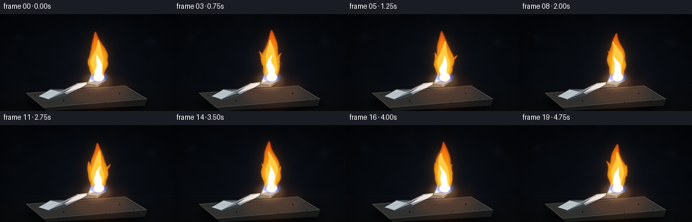
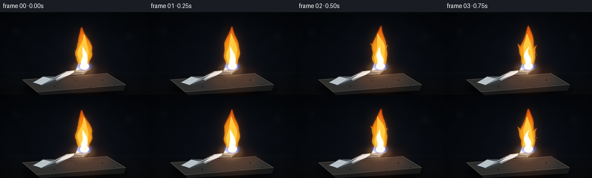

CODING AGENTS AS PIXEL WORLD MODELS
traex/GPT-5.6-Sol · material_0011
点击播放 · 原生 RGB 像素
逐轮保存的候选
回放视频、检查图与代码变化。
每份候选均可单独播放。实际图片检查记录在下方工具轨迹中。
候选 01播放与检查图
点击播放 · 原生 RGB 像素


展开代码变化
--- 上一保存版本
+++ 本次保存版本
@@ -0,0 +1,324 @@
+"""Procedurally render an ignited piece of aluminum as a short RGB video.
+
+The scene is deliberately built from geometry, analytic motion, and raster
+compositing only. Running this file recreates all submission artifacts.
+"""
+
+from pathlib import Path
+import json
+import math
+
+import cv2
+import numpy as np
+from PIL import Image, ImageDraw
+
+import artifact_io
+
+
+CASE_DIR = Path(__file__).resolve().parent
+SPEC = json.loads((CASE_DIR / "task_spec.json").read_text())
+W, H = int(SPEC["width"]), int(SPEC["height"])
+N, FPS = int(SPEC["frames"]), float(SPEC["fps"])
+S = 4
+WW, HH = W * S, H * S
+RNG = np.random.default_rng(4319)
+
+
+def sc_points(points):
+ return [(round(x * S), round(y * S)) for x, y in points]
+
+
+def mask_polygon(points, blur=0.0):
+ im = Image.new("L", (WW, HH), 0)
+ ImageDraw.Draw(im).polygon(sc_points(points), fill=255)
+ a = np.asarray(im, dtype=np.float32) / 255.0
+ if blur:
+ a = cv2.GaussianBlur(a, (0, 0), blur * S)
+ return np.clip(a, 0, 1)
+
+
+def mask_ellipse(box, blur=0.0):
+ im = Image.new("L", (WW, HH), 0)
+ ImageDraw.Draw(im).ellipse(tuple(round(v * S) for v in box), fill=255)
+ a = np.asarray(im, dtype=np.float32) / 255.0
+ if blur:
+ a = cv2.GaussianBlur(a, (0, 0), blur * S)
+ return np.clip(a, 0, 1)
+
+
+def over(canvas, color, alpha):
+ """Alpha composite a flat RGB color into a float RGB canvas."""
+ a = np.clip(alpha, 0, 1)[..., None]
+ canvas[:] = canvas * (1.0 - a) + np.asarray(color, np.float32) * a
+
+
+def add_glow(canvas, color, alpha):
+ canvas[:] += np.asarray(color, np.float32) * np.clip(alpha, 0, 1)[..., None]
+
+
+def pil_overlay(canvas, paint):
+ """Composite an RGBA PIL overlay onto the float canvas."""
+ p = np.asarray(paint, dtype=np.float32)
+ a = p[..., 3:4] / 255.0
+ canvas[:] = canvas * (1 - a) + p[..., :3] * a
+
+
+def flame_shape(base_x, base_y, height, width, phase, lean=0.0, kind=0):
+ """Return a smooth, asymmetric flame silhouette sampled along its sides."""
+ steps = 44
+ left, right = [], []
+ tip_wobble = 2.0 * math.sin(phase * 0.73 + kind * 1.6)
+ for j in range(steps + 1):
+ s = j / steps # 0 at fuel, 1 at flame tip
+ y = base_y - height * s
+ # Motion grows toward the tip but remains continuous from frame to frame.
+ bend = lean * s * s + tip_wobble * s * s
+ bend += (1.8 + 0.45 * kind) * math.sin(phase + 5.1 * s + kind) * s ** 1.45
+ bend += 0.85 * math.sin(2.1 * phase - 8.0 * s + kind * 0.4) * s
+ cx = base_x + bend
+ envelope = (1.0 - s) ** 0.52
+ belly = 0.58 + 0.60 * math.sin(math.pi * min(1.0, s * 1.04)) ** 1.25
+ w = width * envelope * belly
+ left_mod = 1.0 + 0.13 * math.sin(phase * 1.2 + 10.5 * s + kind)
+ right_mod = 1.0 + 0.15 * math.sin(phase * 0.9 - 9.1 * s + kind * 2.0)
+ left.append((cx - w * left_mod, y))
+ right.append((cx + w * right_mod, y))
+ return left + right[::-1]
+
+
+def base_scene():
+ """Create a dark, photographic workshop setting at render resolution."""
+ y, x = np.mgrid[0:HH, 0:WW].astype(np.float32)
+ xn, yn = x / WW, y / HH
+ # Deep blue-black workshop background and a subtly warmer work surface.
+ top = np.zeros((HH, WW, 3), np.float32)
+ top[..., 0] = 5.2 + 5.0 * yn
+ top[..., 1] = 8.0 + 7.0 * yn
+ top[..., 2] = 12.5 + 9.0 * yn
+ surface = np.clip((yn - 0.69) / 0.31, 0, 1)[..., None]
+ top = top * (1 - 0.54 * surface) + np.array([18, 17, 17], np.float32) * (0.54 * surface)
+
+ # Fixed low-frequency texture creates material detail without temporal noise.
+ small = RNG.normal(0, 1, (max(2, HH // 18), max(2, WW // 18))).astype(np.float32)
+ texture = cv2.resize(small, (WW, HH), interpolation=cv2.INTER_CUBIC)
+ texture = cv2.GaussianBlur(texture, (0, 0), 5.0 * S)
+ top += texture[..., None] * np.array([1.4, 1.6, 1.8], np.float32)
+
+ # Vignette and a dim radial pool of ambient light behind the flame.
+ vignette = np.clip(((xn - 0.52) / 0.70) ** 2 + ((yn - 0.48) / 0.82) ** 2, 0, 1)
+ top *= (1.0 - 0.58 * vignette[..., None])
+ ambient = np.exp(-(((xn - 0.56) / 0.30) ** 2 + ((yn - 0.50) / 0.52) ** 2) * 2.0)
+ top += ambient[..., None] * np.array([5.5, 6.0, 7.5], np.float32)
+
+ # Out-of-focus workshop highlights.
+ bokeh = np.zeros((HH, WW), np.float32)
+ for bx, by, br, strength in [(27, 34, 3.5, .22), (224, 42, 5, .16),
+ (201, 69, 2.4, .13), (58, 62, 2, .10)]:
+ cv2.circle(bokeh, (round(bx*S), round(by*S)), round(br*S), strength, -1, cv2.LINE_AA)
+ bokeh = cv2.GaussianBlur(bokeh, (0, 0), 4.0*S)
+ top += bokeh[..., None] * np.array([48, 59, 68], np.float32)
+
+ # The distant horizontal bench seam.
+ top[int(105*S):int(106*S)] += np.array([4, 4, 4], np.float32)
+ return top
+
+
+def draw_solid_objects(canvas, t):
+ """Draw refractory block and the identifiable silver aluminum fragment."""
+ layer = Image.new("RGBA", (WW, HH), (0, 0, 0, 0))
+ d = ImageDraw.Draw(layer, "RGBA")
+
+ # Soft contact shadow beneath the refractory block.
+ shadow = mask_ellipse((36, 119, 221, 146), 5.5)
+ over(canvas, (0, 0, 0), shadow * 0.72)
+
+ # Firebrick top and front planes, deliberately matte and pitted.
+ d.polygon(sc_points([(38, 117), (185, 106), (218, 126), (64, 139)]),
+ fill=(48, 48, 47, 255), outline=(77, 74, 69, 255), width=1*S)
+ d.polygon(sc_points([(64, 139), (218, 126), (214, 136), (69, 144)]),
+ fill=(24, 25, 25, 255))
+ d.line(sc_points([(43, 119), (187, 109), (212, 126)]), fill=(94, 88, 78, 100), width=S)
+ for px, py, r in [(65,124,1.3),(94,129,.8),(177,118,1.1),(198,126,.7),
+ (132,119,.65),(52,121,.6),(156,131,.7)]:
+ d.ellipse((int((px-r)*S), int((py-r)*S), int((px+r)*S), int((py+r)*S)),
+ fill=(18, 19, 19, 150))
+
+ # Aluminum ribbon: a broad irregular horizontal strip with crisp metallic facets.
+ metal = [(56, 122), (74, 111), (96, 111), (114, 102), (132, 100),
+ (146, 93), (157, 99), (145, 108), (120, 110), (99, 120), (72, 128)]
+ d.polygon(sc_points(metal), fill=(128, 137, 143, 255),
+ outline=(37, 42, 46, 255), width=S)
+ # Facets make the object read as folded metal rather than a stone.
+ d.polygon(sc_points([(57,122),(75,112),(94,113),(72,126)]), fill=(185,195,200,255))
+ d.polygon(sc_points([(75,112),(99,112),(115,103),(95,117)]), fill=(82,91,98,255))
+ d.polygon(sc_points([(72,126),(95,117),(101,120),(73,128)]), fill=(54,61,66,255))
+ d.polygon(sc_points([(95,117),(115,103),(133,101),(120,109)]), fill=(211,218,219,255))
+ d.polygon(sc_points([(120,109),(133,101),(145,108)]), fill=(74,82,87,255))
+ d.line(sc_points([(63,120),(94,114),(115,104),(132,102)]), fill=(242,247,245,185), width=S)
+
+ # A bent-up tab puts the burning point visibly on the aluminum itself.
+ d.polygon(sc_points([(128,104),(137,84),(151,88),(157,99),(145,106)]),
+ fill=(111,122,129,255), outline=(40,46,50,255), width=S)
+ d.polygon(sc_points([(137,84),(151,88),(146,98),(132,101)]), fill=(208,216,217,255))
+ d.polygon(sc_points([(151,88),(157,99),(146,98)]), fill=(66,74,80,255))
+ d.line(sc_points([(138,86),(149,89)]), fill=(255,255,250,210), width=S)
+ d.line(sc_points([(132,101),(146,98)]), fill=(235,238,231,145), width=S)
+
+ pil_overlay(canvas, layer)
+
+
+def heat_shimmer(canvas, t):
+ """Locally refract the background above the combustion zone."""
+ yy, xx = np.mgrid[0:HH, 0:WW].astype(np.float32)
+ px, py = xx / S, yy / S
+ local = np.exp(-((px - 145) / 25) ** 2) * np.clip((98 - py) / 60, 0, 1)
+ dx = local * (0.8*S) * (np.sin(py * 0.22 + t * 4.0) + 0.45*np.sin(py*.43-t*2.7))
+ dy = local * (0.30*S) * np.sin(px*.24 + t*3.1)
+ warped = cv2.remap(canvas, xx + dx.astype(np.float32), yy + dy.astype(np.float32),
+ cv2.INTER_LINEAR, borderMode=cv2.BORDER_REFLECT)
+ mix = (local * .32)[..., None]
+ canvas[:] = canvas * (1-mix) + warped * mix
+
+
+def flame_masks(t):
+ phase = t * 4.15
+ main = flame_shape(145, 93, 67 + 2.4*math.sin(t*2.2), 14.4, phase, -1.5, 0)
+ left = flame_shape(141, 94, 39 + 2*math.sin(t*2.8+1), 8.0,
+ phase*1.08+1.1, -10.5, 1)
+ right = flame_shape(149, 94, 35 + 2.3*math.sin(t*3.3), 7.2,
+ phase*.92+2.6, 10.5, 2)
+ outer = np.maximum.reduce([mask_polygon(main), mask_polygon(left), mask_polygon(right)])
+
+ mid = flame_shape(145, 94, 55 + 2*math.sin(t*2.5+.4), 9.6,
+ phase+0.35, -1.0, 3)
+ middle = mask_polygon(mid)
+ core = flame_shape(145, 95, 34 + 1.5*math.sin(t*2.0+.8), 5.9,
+ phase*.8+1.5, -0.5, 4)
+ inner = mask_polygon(core)
+ return outer, middle, inner
+
+
+def render_flame(canvas, t):
+ outer, middle, inner = flame_masks(t)
+ yy = np.arange(HH, dtype=np.float32)[:, None] / S
+ rise = np.clip((94 - yy) / 70, 0, 1)
+
+ # Broad illumination cast by the very bright metal combustion.
+ halo = cv2.GaussianBlur(outer, (0, 0), 10.0*S)
+ add_glow(canvas, (255, 107, 23), halo * 0.29)
+ near_halo = cv2.GaussianBlur(np.maximum(middle, inner), (0, 0), 4.0*S)
+ add_glow(canvas, (255, 189, 58), near_halo * 0.44)
+
+ # Thin crimson edge around the orange silhouette.
+ dil = cv2.GaussianBlur(outer, (0, 0), 1.2*S)
+ fringe = np.clip(dil - outer*.64, 0, 1)
+ over(canvas, (217, 48, 9), fringe * .75)
+
+ # Orange outer tongues; vertically varying color preserves flame depth.
+ edge_dist = cv2.distanceTransform((outer > .5).astype(np.uint8), cv2.DIST_L2, 5) / S
+ interior = np.clip(edge_dist / 4.0, 0, 1)
+ orange_color = np.empty_like(canvas)
+ orange_color[..., 0] = 255
+ orange_color[..., 1] = 88 + 93 * (1-rise) + 24*np.sin(np.pi*rise)
+ orange_color[..., 2] = 8 + 23 * (1-rise)
+ a = outer * (0.64 + .30*interior)
+ canvas[:] = canvas*(1-a[...,None]) + orange_color*a[...,None]
+
+ # Golden middle and incandescent white core.
+ over(canvas, (255, 210, 72), middle * .90)
+ inner_soft = cv2.GaussianBlur(inner, (0, 0), .32*S)
+ over(canvas, (255, 255, 231), inner_soft * .97)
+ highlight = cv2.erode((inner > .5).astype(np.float32), np.ones((3*S,3*S),np.uint8))
+ over(canvas, (255, 255, 255), highlight * .88)
+
+ # Characteristic blue-violet combustion collar at the aluminum surface.
+ blue = mask_ellipse((132, 85, 159, 101), 1.0)
+ blue *= np.clip((yy - 84) / 11, 0, 1)
+ over(canvas, (61, 117, 255), blue * .52)
+ violet = mask_ellipse((137, 88, 155, 99), .45)
+ over(canvas, (157, 140, 255), violet * .38)
+ white_base = mask_ellipse((139, 89, 153, 99), .65)
+ add_glow(canvas, (255, 255, 238), white_base * .90)
+
+
+# Fixed spark properties: periodic activation gives continuity and a steady burn.
+SPARKS = []
+for k in range(30):
+ SPARKS.append(dict(
+ phase=float(RNG.uniform(0, 1.65)), period=float(RNG.uniform(1.35, 2.15)),
+ life=float(RNG.uniform(.48, .90)), vx=float(RNG.uniform(-24, 26)),
+ vy=float(RNG.uniform(-66, -32)), grav=float(RNG.uniform(29, 46)),
+ ox=float(RNG.uniform(-5.5, 5.5)), oy=float(RNG.uniform(-2, 2)),
+ size=float(RNG.uniform(.35, 1.05))))
+
+
+def render_sparks(canvas, t):
+ glow_layer = Image.new("L", (WW, HH), 0)
+ hot_layer = Image.new("RGBA", (WW, HH), (0,0,0,0))
+ gd, hd = ImageDraw.Draw(glow_layer), ImageDraw.Draw(hot_layer, "RGBA")
+ for sp in SPARKS:
+ age = (t - sp["phase"]) % sp["period"]
+ if age > sp["life"]:
+ continue
+ x = 145 + sp["ox"] + sp["vx"]*age
+ y = 92 + sp["oy"] + sp["vy"]*age + .5*sp["grav"]*age*age
+ if not (-3 < x < W+3 and -3 < y < H+3):
+ continue
+ fade = (1-age/sp["life"])**.55
+ # A short trajectory-aligned streak reads well at the intentionally low fps.
+ vx, vy = sp["vx"], sp["vy"] + sp["grav"]*age
+ norm = max(1.0, math.hypot(vx, vy))
+ trail = (1.0 + 2.2*sp["size"])*fade
+ x2, y2 = x-vx/norm*trail, y-vy/norm*trail
+ width = max(1, round(sp["size"]*S))
+ hd.line(sc_points([(x2,y2),(x,y)]), fill=(255,208,75,round(245*fade)), width=width)
+ r = max(1, round(sp["size"]*S*.68))
+ hd.ellipse((round(x*S-r),round(y*S-r),round(x*S+r),round(y*S+r)),
+ fill=(255,255,218,round(250*fade)))
+ gd.line(sc_points([(x2,y2),(x,y)]), fill=round(180*fade), width=max(2,width*2))
+ g = cv2.GaussianBlur(np.asarray(glow_layer,np.float32)/255., (0,0), 1.8*S)
+ add_glow(canvas, (255, 116, 18), g*.85)
+ pil_overlay(canvas, hot_layer)
+
+
+def finish_frame(canvas, frame_index):
+ # Fine deterministic sensor grain avoids flat synthetic gradients.
+ local_rng = np.random.default_rng(9100 + frame_index)
+ grain = local_rng.normal(0, .72, canvas.shape[:2]).astype(np.float32)
+ canvas += grain[...,None]
+ canvas = np.clip(canvas, 0, 255).astype(np.uint8)
+ # Supersampled render resolves tiny sparks and crisp foil edges naturally.
+ return np.asarray(Image.fromarray(canvas).resize((W,H), Image.Resampling.LANCZOS))
+
+
+def render_frame(i):
+ t = i / FPS
+ canvas = base_scene()
+ heat_shimmer(canvas, t)
+ draw_solid_objects(canvas, t)
+
+ # Warm reflection on block and aluminum, placed below the visible flame.
+ reflection = mask_ellipse((103, 91, 190, 135), 9.0)
+ add_glow(canvas, (255, 92, 18), reflection * (0.14 + .012*math.sin(t*3.1)))
+ metal_flash = mask_ellipse((123, 87, 164, 112), 4.0)
+ add_glow(canvas, (255, 202, 106), metal_flash * .21)
+
+ render_sparks(canvas, t) # distant sparks behind the opaque flame
+ render_flame(canvas, t)
+
+ # Incandescent oxidation bead attached exactly to the raised metal tab.
+ bead_halo = mask_ellipse((140, 87, 153, 99), 2.1)
+ add_glow(canvas, (255, 125, 20), bead_halo*.68)
+ bead = mask_ellipse((143, 91, 151, 97), .25)
+ over(canvas, (255, 250, 210), bead*.92)
+ return finish_frame(canvas, i)
+
+
+def main():
+ frames = np.stack([render_frame(i) for i in range(N)], axis=0).astype(np.uint8)
+ artifact_io.save(frames, CASE_DIR)
+ print(f"saved {frames.shape[0]} RGB frames at {frames.shape[2]}x{frames.shape[1]} to {CASE_DIR}")
+
+
+if __name__ == "__main__":
+ main()
可观测工具轨迹
实际执行的命令与返回图片。
命令 1exit 0
/bin/bash -lc "cat prompt.txt && printf '\\n--- GENERATION_RULES.md ---\\n' && cat GENERATION_RULES.md"
命令 2exit 0
/bin/bash -lc "cat task_spec.json && printf '\\n--- files ---\\n' && find . -maxdepth 2 -type f -printf '%p\\n' | sort"
命令 3exit 0
/bin/bash -lc "command -v ffmpeg || true; command -v python3 || true; python3 - <<'PY' mods=['PIL','numpy','cv2','imageio'] for m in mods: try: mod=__import__(m); print(m, getattr(mod,'__version__','ok')) except Exception as e: print(m,'NO',e) PY"
命令 4exit 0
/bin/bash -lc 'cat artifact_io.py'
命令 5exit 0
/bin/bash -lc 'python3 generate.py'
命令 6exit 0
/bin/bash -lc 'ls -lh pixels.npz inspection.png transition_check.png index.html frames/00.png frames/19.png && python3 -m py_compile generate.py'
命令 7exit 0
/bin/bash -lc "python3 - <<'PY'
from pathlib import Path
import numpy as np
from PIL import Image
p=Path('.')
z=np.load('pixels.npz')['pixels']
print('packed pixels:', z.shape,z.dtype)
ims=np.stack([np.asarray(Image.open(f'frames/{i:02d}.png').convert('RGB')) for i in range(20)])
print('frames:',ims.shape,ims.dtype,'range',ims.min(),ims.max())
print('mean RGB',np.round(ims.mean((0,1,2)),2))
print('mean abs consecutive deltas:',np.round(np.abs(np.diff(ims.astype(float),axis=0)).mean((1,2,3)),2))
# Flame-region highlights and color signature by frame.
r=ims[:,18:106,115:175]
bright=(r.mean(3)>210).sum((1,2)); orange=((r[:,:,:,0]>180)&(r[:,:,:,0]>r[:,:,:,1]*1.35)&(r[:,:,:,1]>35)).sum((1,2)); blue=((r[:,:,:,2]>r[:,:,:,0]*1.25)&(r[:,:,:,2]>100)).sum((1,2))
print('bright region pixels:',bright.tolist())
print('orange region pixels:',orange.tolist())
print('blue region pixels:',blue.tolist())
assert ims.shape==(20,144,256,3) and ims.dtype==np.uint8
assert all(Path(x).is_file() for x in ['pixels.npz','inspection.png','transition_check.png','index.html'])
print('artifact validation: PASS')
PY"保存候选 1 份；完成命令 7 次；可验证图片返回 0 张。原始 API 响应与完整日志保留在本地。